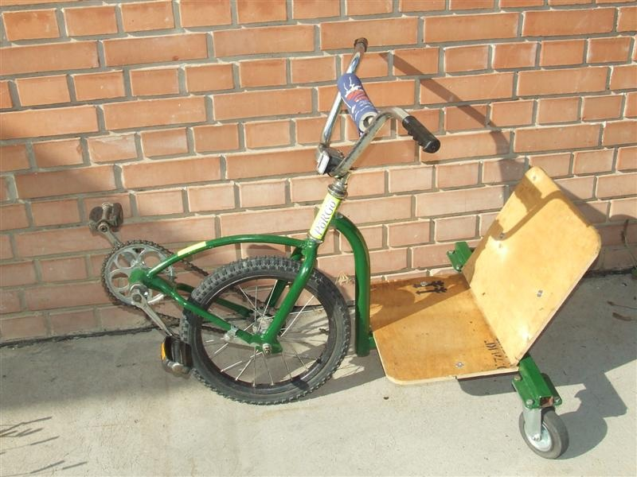
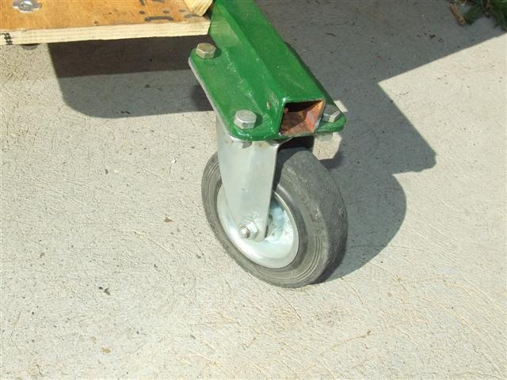

Felépítését tekintve a Pörgő bringa egy különleges tricikli. Az első 16 collos kereket hajtjuk és kormányozzuk, a kormányzásba viszont jelentősen beavatkoznak a kisméretű hátsó kerekek is.

A két hátsó kerék tengelye nincs stabilan rögzítve, hanem önbeállóak. Emiatt ha a bringát mozgásba hozzuk, és kanyarodni próbálunk vele, megpördül akár 180 vagy 360 fokos szögben is. Kellő gyakorlással - a hajtás és a kormányzás összehangolásával - ez a pörgés akaratunk szerint irányítható.